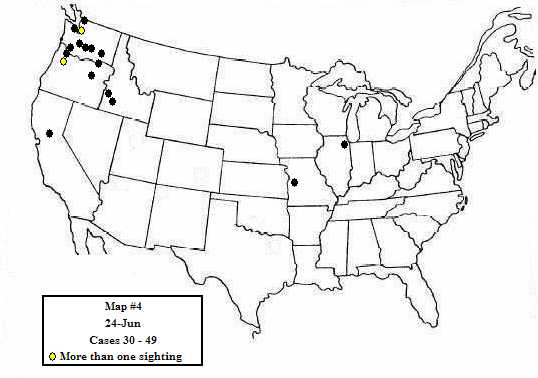
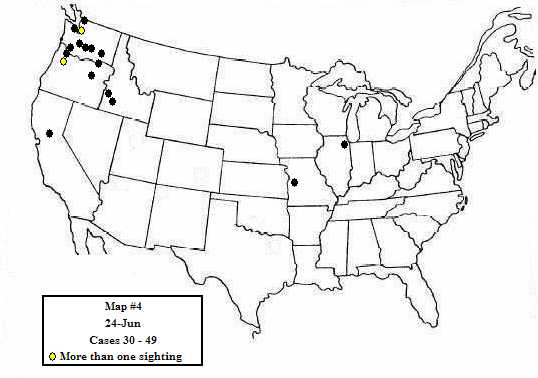
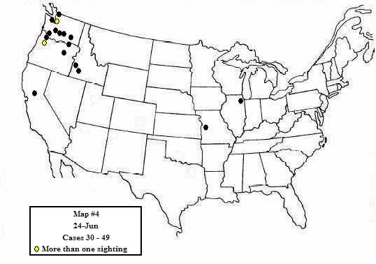

 

The 1947 UFO wave is perhaps the most fascinating of any to examine because of its unique position at the very beginning of the contemporary period of UFO activity in this country. There were no "attitudes" about UFOs in June 1947. There were no preconceptions, no misconceptions, no "policies" by either press or public, or by any official agencies, and certainly no pattern existed concerning the phenomenon by which comparisons might be made. Few people recalled the reports of "ghost rockets" over Sweden during the summer of 1946, and it was only during the crest of the 1947 wave, on July 6th and 7th, that any connection was made with those earlier phenomena. A few World War II veterans, who had observed "foo fighters" over Germany and in the South Pacific during the war, were now reminded of those earlier incidents by the widespread reports of flying saucers. But for most witnesses, the experience of observing strange aerial manifestations was completely without precedent and profoundly baffling.
We now know that after 1947 it could be expected that a UFO witness might be afraid to report a sighting publicly for fear of ensuing ridicule and intimidation. This is a reaction we have come to expect, one of the many psychological complexities of the UFO phenomenon that has developed out of prevailing public and official attitudes over a long period of time. But in 1947 there were no such precedents to create this type of fear; these witnesses had seen something unaccountable and their fear was of the unknown, a reaction to something totally new and unexpected. There was no place, outside of science fiction, for this kind of inexplicable experience: the appearance of some new phenomenon was not just frightening, it was against all common sense, and if something in someone’s experience does not make any sense, it is not likely that this experience is going to be made public, at least not until it is discovered that others have shared the same baffling experience. And so to many, it must have come as something of a relief to read of Kenneth Arnold's sighting, and to discover that they had not taken leave of their senses and were not the only ones to have come face to face with something they were quite unable to explain or understand.
(I–4)
